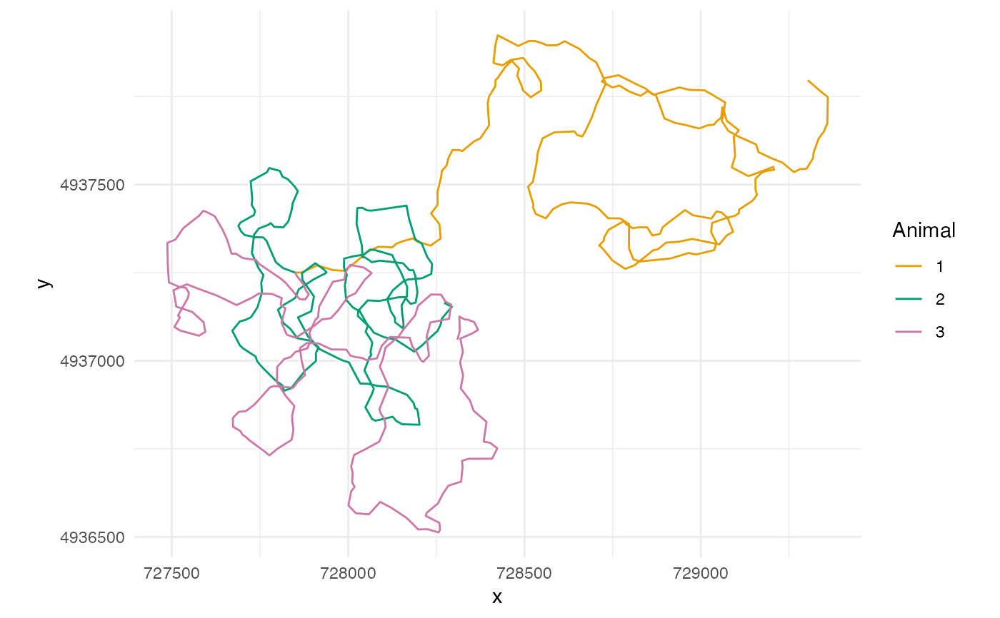
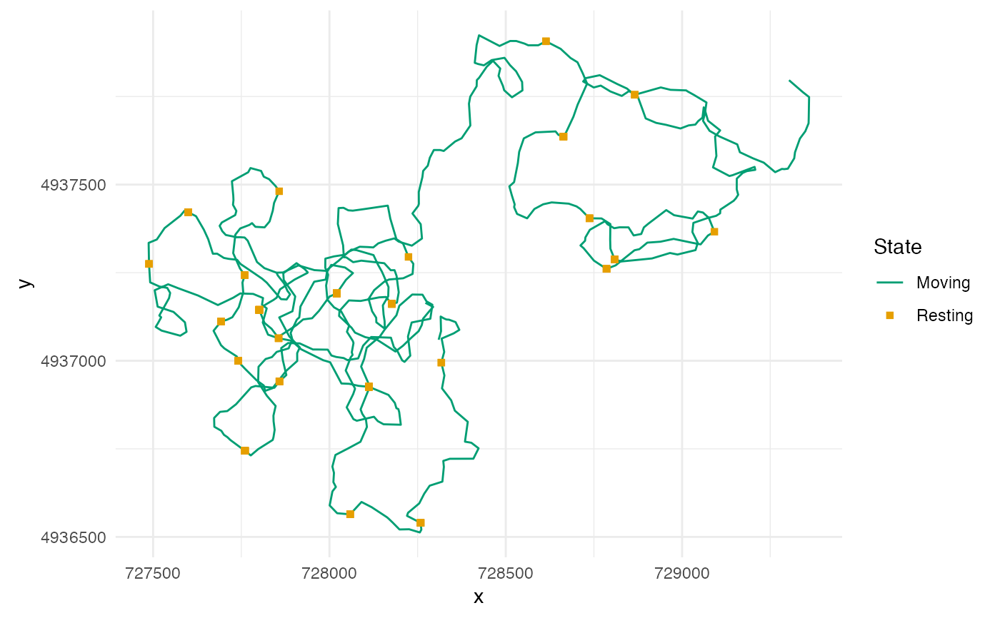

Colours for simulated tracks
scale_colour_tracks.RdA discrete ggplot2 colour scale for tracks drawn over water by depth. Its
six colours are the Okabe-Ito palette of grDevices::palette.colors()
less its black, grey and pale yellow, in this order: orange #E69F00,
bluish green #009E73, reddish purple #CC79A7, blue #0072B2,
vermillion #D55E00 and sky blue #56B4E9. With more than six animals
or groups the colours repeat. Draw each track over a wider white line, so
that the blues read on deep water.
Arguments
- ...
Passed to
ggplot2::discrete_scale(), such asname,labelsorguide.- colours
NULLto give the levels the six colours in order, or a character vector named by level whose values name colours of the set:"orange","bluish_green","reddish_purple","blue","vermillion"or"sky_blue".
Details
Give colours to tie a colour to each level by name. The suite uses
bluish green for moving and orange for resting, with resting positions
drawn as squares so that the state is not carried by colour alone.
Examples
stoney <- terra::rast(system.file("extdata", "stoney_depth.tif",
package = "arraydesign"))
# A walk that rests: keep moving 0.95, rest 0.05; keep resting 0.90
rests <- matrix(c(0.95, 0.05, 0.10, 0.90), nrow = 2, byrow = TRUE)
walk <- crw_model(30, 15, 40, time_step_s = 60, transition = rests)
# Three animals for 4 hours from one point in the middle of the lake
middle <- data.frame(x = 727850, y = 4937250)
tracks <- as.data.frame(simulate_tracks(
stoney, walk, n_animals = 3, n_steps = 240,
control = track_control(start = middle), seed = 1
))
# One colour per animal, each track over a white casing
ggplot2::ggplot(tracks, ggplot2::aes(x, y, group = path_id)) +
ggplot2::geom_path(colour = "white", linewidth = 1.2) +
ggplot2::geom_path(ggplot2::aes(colour = factor(path_id))) +
scale_colour_tracks(name = "Animal") +
ggplot2::coord_equal() +
detfield::theme_positionr()

# One colour per state, named; resting positions as squares
resting <- tracks[tracks$state == 2, ]
ggplot2::ggplot(tracks, ggplot2::aes(x, y)) +
ggplot2::geom_path(ggplot2::aes(group = path_id, colour = "Moving")) +
ggplot2::geom_point(data = resting, ggplot2::aes(colour = "Resting"),
shape = 15) +
scale_colour_tracks(name = "State",
colours = c(Moving = "bluish_green",
Resting = "orange")) +
ggplot2::coord_equal() +
detfield::theme_positionr()
